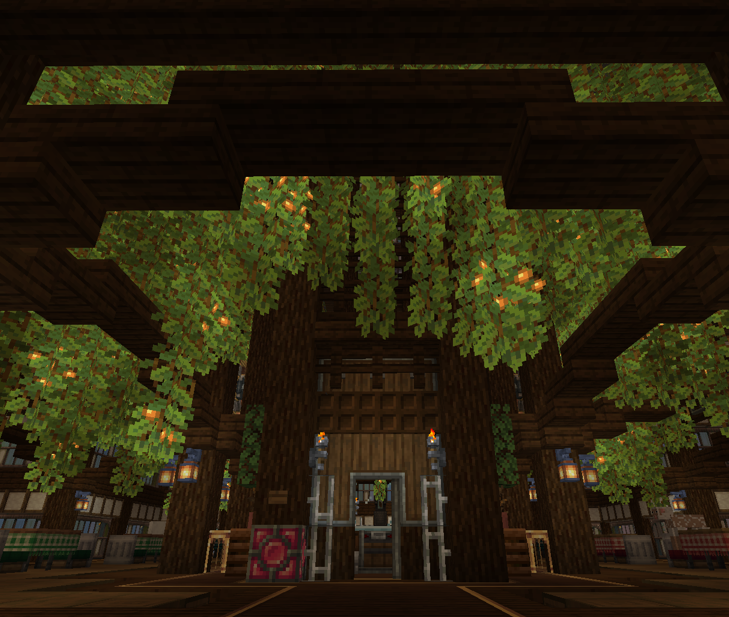
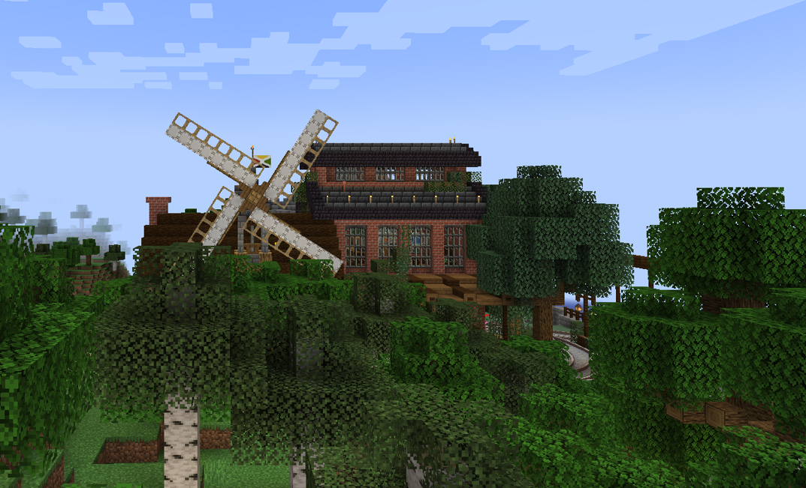

The sky poker stands tall, its fingers scraping the clouds. Although its primary purpose is to generate infinite amounts of cactus, its deeper meaning remains esoteric and undiscovered.
Some say it is a beacon of hope, a symbol of growth and renewal in a world that can often feel barren and desolate. Others believe it is a reminder of the power of nature, and the importance of respecting and preserving the environment around us.
Despite its enigmatic nature, the sky poker has become a beloved landmark in the community, drawing visitors from far and wide to marvel at its towering presence and the lush greenery that surrounds it.
Whether it is a source of inspiration or simply a curious oddity, the sky poker stands as a testament to the beauty and wonder of the natural world, and the endless possibilities that can arise from even the most unexpected places.

In the distance, the windmill turns, its blades slicing through the air with a rhythmic hum. It serves as a symbol of resilience and sustainability, harnessing the power of the wind to generate energy for the surrounding area.
As the windmill turns, it reminds us of the importance of renewable energy sources and the need to reduce our reliance on fossil fuels. It also serves as a reminder of the beauty and power of nature, and the potential for human ingenuity to work in harmony with the environment.
Whether it is a source of inspiration or simply a functional piece of machinery, the windmill stands as a testament to the potential for sustainable living and the importance of protecting our planet for future generations.
As the sun sets behind the windmill, casting a warm glow over the surrounding landscape, it serves as a reminder of the beauty and wonder of the natural world, and the endless possibilities that can arise from even the most unexpected places.
In the distance, the windmill turns, its blades slicing through the air with a rhythmic hum. It serves as a symbol of resilience and sustainability, harnessing the power of the wind to generate energy for the surrounding area.